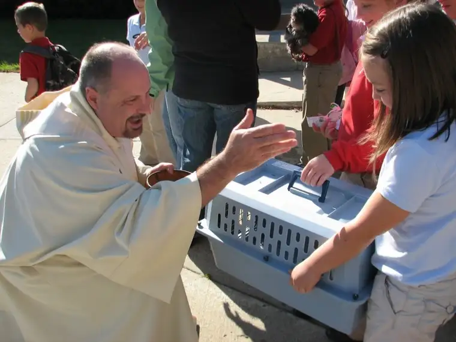
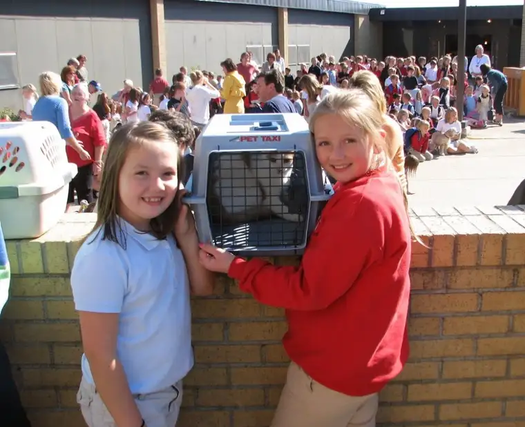

{kind=link}
Most years, a few more “unconventional” pet types make it into the mix as well. This year’s event included a ferret, and one gal next to me had some “fish water” in a small, Tupperware container that was to be blessed in lieu of the actual fish (who apparently doesn’t like car rides anymore than the cats). 
{kind=link}
One year, pregnant and toting a toddler, I didn’t have it in me to drag our cats to school, too, so I brought a little knick-knack that resembled a miniature version of our cats. What a great solution, I thought; everybody wins. But my kids didn’t see it that way, and they hung their heads in mortification as we we made our way through the blessing line. As I attempted to explain to the priest why I was showing him a small cat figurine instead of the actual cats, they pretended they belonged to the mother behind me — the one who’d brought along a Great Dane, two poodles and a squirrel plus her toddler and twin babies.
Let’s just say I wasn’t altogether disappointed to learn I wouldn’t be in town during the Pet Blessing this year. When I explained to my oldest daughter that, “Sorry, dear, I’ll be on the road to the writers’ conference by 2:30 but at least I was there all the other years,” she wasn’t pacified. As one who thrives on tradition and is in her last year of elementary school (thus her last year of pet blessings), she went into a tizzy over the gentle news. I knew she’d live somehow, but could I really so easily deny my five-year-old the thrill of his first Pet Blessing? (Bad mother!)
As it turned out, my friend Mary had a family emergency that put her several hours behind, creating an opportunity for me to go after all. And so I did, feeling certain I would be eliminated from the candidate list of “Loser Mother of the Year.” After being swallowed up by the usual crazy mess of pets and people at the courtyard entrance, I searched the sea of students and spotted my girls. Their smiles were huge and bright. Now to find my little son and make his day as well. As he slowly slogged toward me, I noticed something odd in his face. There was no smile there. “Mom, why’d you come here, anyway?” Apparently his teacher had taken a show of hands for those who were to have pets present, and he hadn’t raised his. I’d thrown him off his groove. (Sigh. You can’t win em all.)
All of the messiness of Pet Blessing Day aside, there is something incredibly sweet about it. While we parents in attendance might not always bristle with excitement realizing “it’s that time again,” our reward comes in seeing our kids waving to us when we arrive. Forget what it took to GET us (and those stubborn, travel-anxious cats) there. If we made it, chances are MOST of our children appreciate our presence.
Of all the sights at this year’s event, a few made the trip worth every drop of sweat I produced from the ten minutes of cat-chasing to get “Skittles” into her carrier. First, the fish water. I giggled seeing it perched atop the cat carrier next to me. I also noticed a few kids presenting photos of their absent pets. “Ha, I’m not the only one in the history of the Pet Blessing to attempt a substitute,” I thought. But my favorite of all was a drawing made by one of my daughter’s friends. Apparently, her father’s newt has been gone since the 60s or 70s (sometime back there in those ancient days), but amazingly, his legend has survived and despite all the years he has been away from this green earth, one newt’s precious life was thought of at this year’s gathering (see below). So, here’s to all those pets, dead or alive, who have blessed our children’s (and our) lives. And here’s to the teachers and other staff at our kids’ schools who keep having this event year after year (because it’s definitely NOT for the adults’ satisfaction).
Newt, wherever you are, R.I.P.
{kind=link}